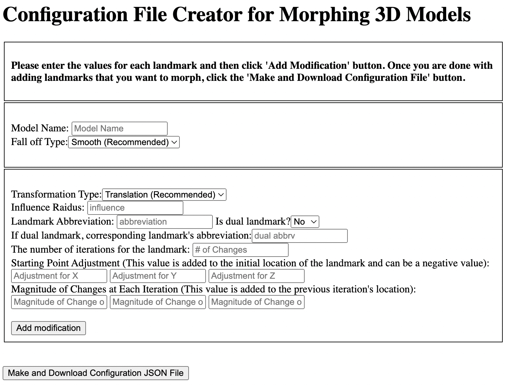

The CreateMorphingConfigurations.html page is used to generate the instructions JSON file. The configuration JSON file is given to the Python script to generate modified 3D models. An example JSON file is provided with the name Facial-Deformities.json. Below is a screenshot of the CreateMorphingConfigurations.html page:
The user needs to enter the names of the model (.obj) file in the ‘Model Name’ textbox. The names of the model (.obj) file and the .json file that contains landmark locations should match and be in the same directory. For example, Sarah.obj and Sarah.json. In this case, you would input “Sarah” as the model name.
The falloff type specifies how the area around the landmark you are manipulating will be affected by your modification. The options for the falloff type are smooth, sphere, and inverse square.
The transformation type determines how you manipulate the point. The options are translation and scale. The translation is a shift in 3D space (means addition), while the scale is a multiplier (a value of 1 means no change in scale) that is applied to the distance between the landmark and the origin on a given axis.
The influence radius represents how far the manipulation will be effective around the landmark.
The landmark abbreviation represents the landmark you want to manipulate. You must have the location of the landmark included in the model’s corresponding json file. For example, if the user enters ‘prn’ into the landmark abbreviation textbox, there must be ‘prn’ (pronasale) listed in the json file and it should have values for “xVal”, “yVal”, and “zVal” tags in the json file. The xVal, yVal, ZVal values of a landmark specify the current location of the landmark.
If the landmark is a dual landmark (has a left or right corresponding landmark), then select ‘Yes’ for ‘Is dual landmark’ and then enter dual landmark’s abbreviation. An example of a dual landmark is alar crease - left (ac_l) and its corresponding landmark is alar crease - right (ac_r). Examples of landmarks that are not dual are pronasale/tip (prn), glabella (g), nasion/radix (r). Users can enter the number of modifications desired for the landmark into the textbox ‘The number of iterations for the landmark.’ Each of the modifications will result in a new morphed 3d model.
Starting Point Adjustment X, Y and Z determines what will be added to the initial location of the landmark’s X, Y, and Z location. The adjustment values can be negative. For example, if the xVal is 75 in the JSON file and starting point adjustment for X is -10, then -10 will be added to 75 to make the starting point of the X value 65.
The values entered into the ‘Magnitude of changes at each iteration’ textbox are added to the previous iteration’s location. For example, if the xVal for prn in the JSON file is 75, the number of iterations is 3, starting point adjustment for X is -10, and the magnitude of changes at each iteration is 10. Then three new 3D models will be created with X values 65, 75, and 85.
Having a negative value for a starting point might be useful if your original 3D model has the x, y, z locations of a 3D model that represents the average measurements. The starting point of the values can be used to move the measurements toward the boundaries of the normal distribution by using -3 times the standard deviation as its starting point, having the magnitude of changes as the standard deviation and number of modifications as seven.
After the user enters the above values for a landmark, he/she can click the ‘Add Modification’ button. This will add the modifications for the landmark into a table. Once the user enters values for all the landmarks he/she wants to modify, he/she can click on the ‘Make and Download the Configuration File’ button to download. The configuration JSON file can then be used as an input for the 3D morphing Phyton code.